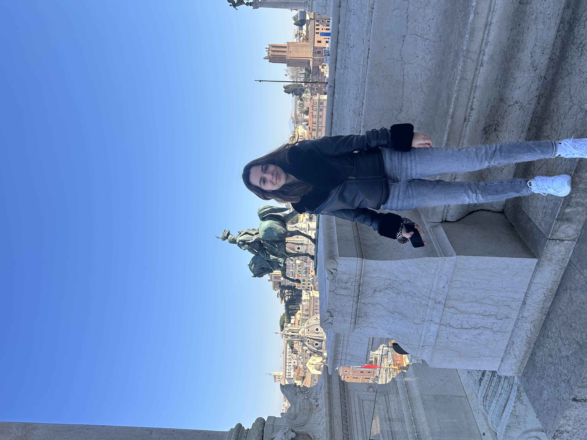

Dünya Günlüğü

Merhaba, ben Zeynep Azra. Yazılım Mühendisliği 3. sınıf öğrencisiyim. Bu sitede Avrupa’da gezdiğim şehirleri, biriktirdiğim anıları, dikkatimi çeken detayları ve kendi seyahat deneyimlerimi bir araya getiriyorum.
9 ülke, onlarca şehir ve yüzlerce anı... Dünya Günlüğü, sadece bir gezi arşivi değil; aynı zamanda benim gözümden şehirlerin atmosferini, mimarisini ve hissini yansıtan kişisel bir yolculuk haritası.
Keşfetmeye BaşlaÜlkeler
Ziyaret ettiğim ülkeleri ve şehirleri tek bir yerde topladım. Her sayfada fotoğraflar, kısa notlar ve o ülkeye dair kişisel izlenimlerimi bulabilirsin.